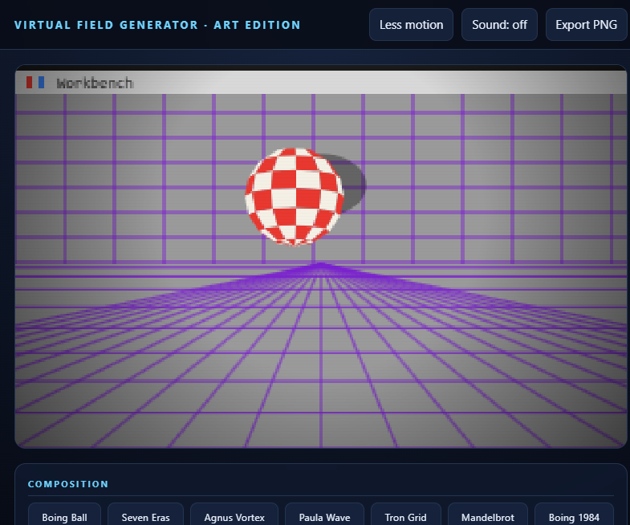

Ein Ball springt durch ein Feld. Du kannst das Feld verändern, die Farben wechseln und Mandelbrot erkunden.
Kostenlos. Offen. Ohne Anmeldung. Noch nicht mit echten Nutzern getestet.
Demo öffnen Startseite · Quelltext: field-generator.html · Bild: og-image.png